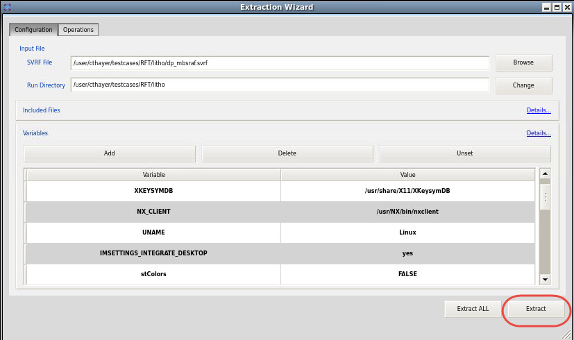
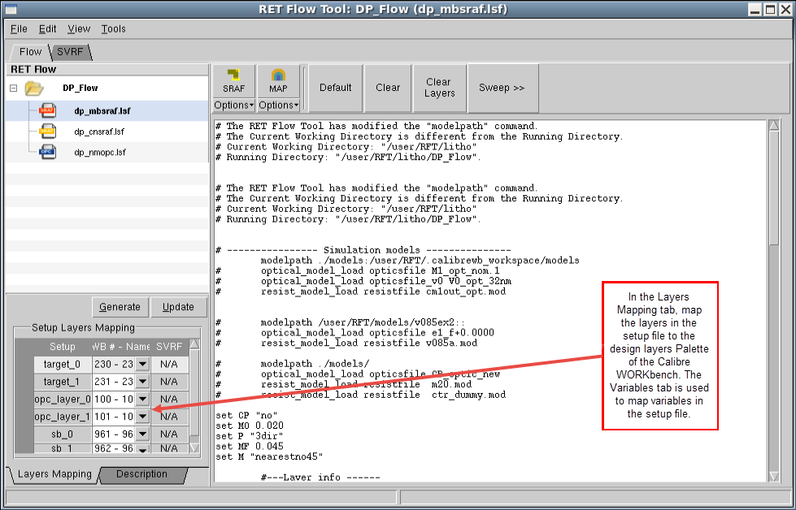
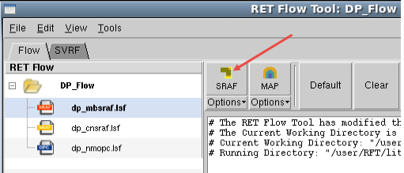

You extract the
Calibre nmSRAF portions of your SVRF file, and import it into the
RET Flow Tool. This session is added to the existing nmOPC session already
in place.
Procedure
- In the RET Flow Tool, extract
the mbsraf portions of an SVRF file by choosing ,
and in the dialog box that appears, open the SVRF file of interest.
The Extraction Wizard
appears with the variables expanded in the left pane and their respective
values in the right pane.
- Click Extract (in
the lower-right corner of the Extraction Wizard window) as shown
in Figure 1.
Figure 1. Extraction Wizard
The mbsraf session window appears
with the mbsraf session map expanded in the left pane and SVRF code
in the right pane.
- Map the input layers from
the setup file to layers displayed in the Layers Palette of Calibre
WORKbench as shown in Figure 2. Layer numbers are matched
by order to layer statements.
Figure 2. mbsraf Session 
- Click the SRAF button
as shown in Figure 3 to start Calibre mbSRAF.
Figure 3. RET Flow Tool For
Running mbsraf
The SRAF is generated and output
on the design for all layers that were input (in this case, both
metal masks of a double-patterning design).
Results
You have imported your Calibre nmOPC
and nmSRAF commands into the RET Flow Tool and performed OPC and
SRAF generation.